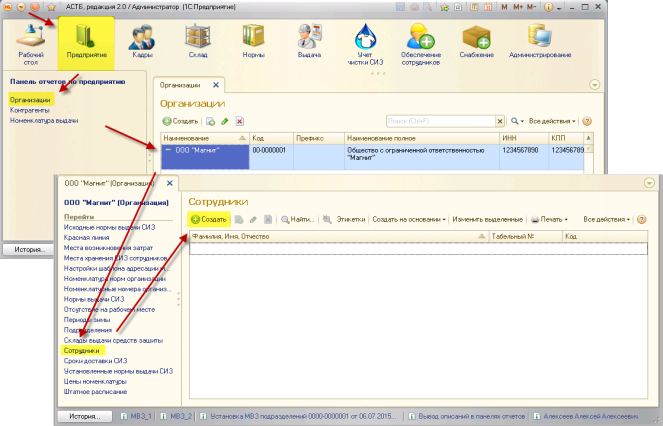
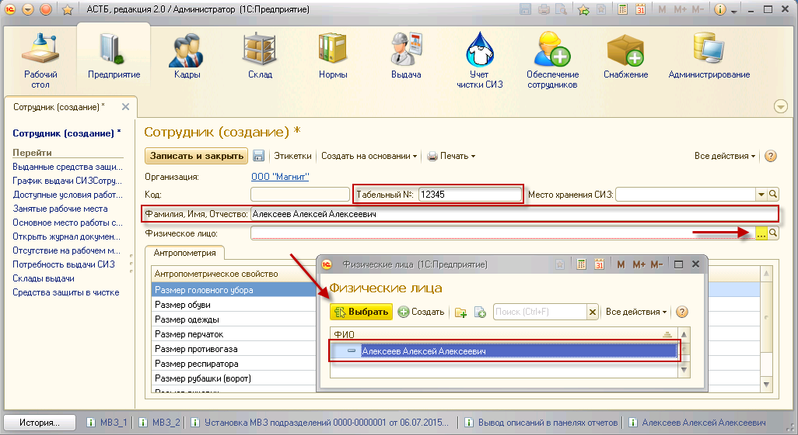
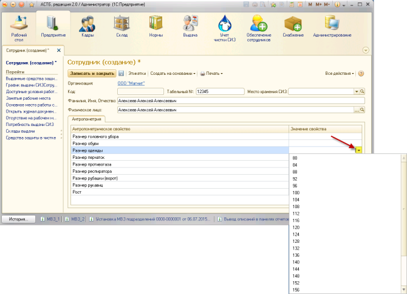
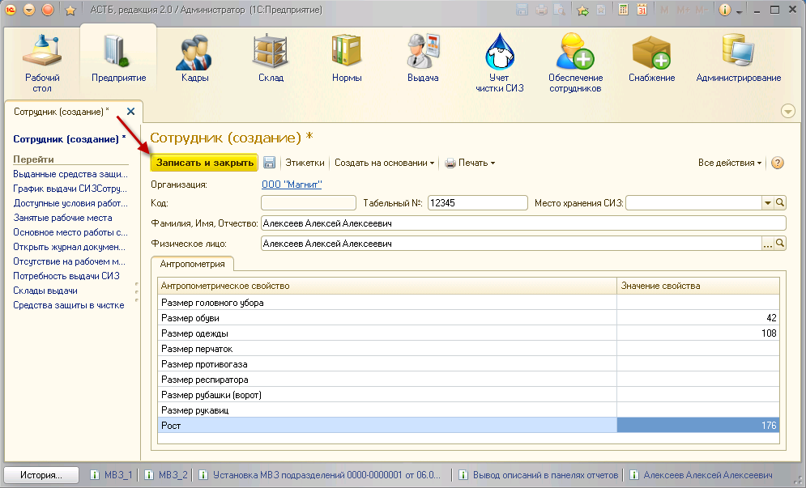

Для создания сотрудника зайдите в раздел «Предприятие», двойным нажатием выберите созданную ранее организацию и зайдите в пункт «Сотрудники». В новом окне нажмите на кнопку «Создать», после чего появится форма для заполнения данных по сотруднику.

В окне «Сотрудник (создание)» необходимо заполнить:
1. Табельный номер сотрудника;
2. Фамилию, Имя, Отчество сотрудника;
3. В строке «Физическое лицо», с помощью кнопки <...>

4. Антропометрические данные. Для введения данных используйте кнопку
Примечание: обязательными для заполнения являются значения роста, размеров одежды, обуви, головного убора и перчаток.

Примечание: при проставлении размеров одежды сотрудников следует руководствоваться допустимыми значениями антропометрических свойств, принятых в ПК АСТБ. Список допустимых значений можно найти в приложении к руководству пользователя.
Когда все данные будут введены, нажмите кнопку «Записать и закрыть».
